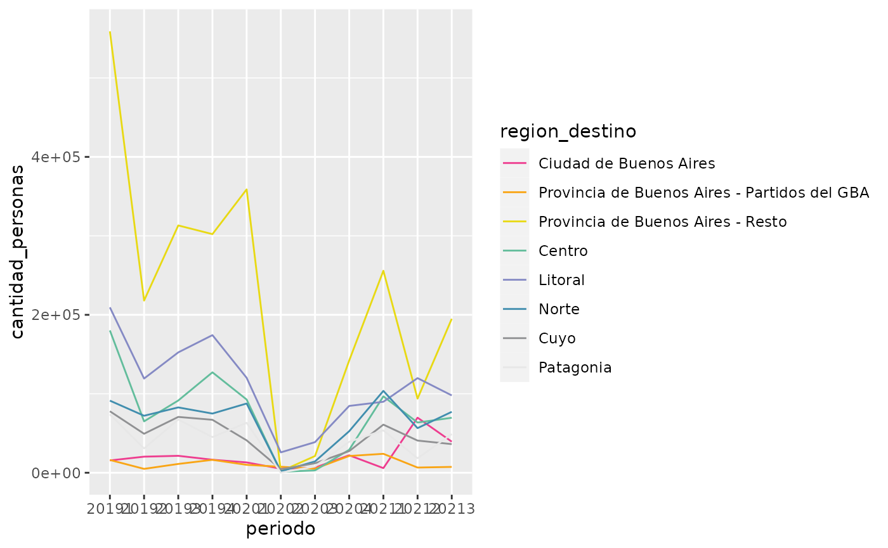
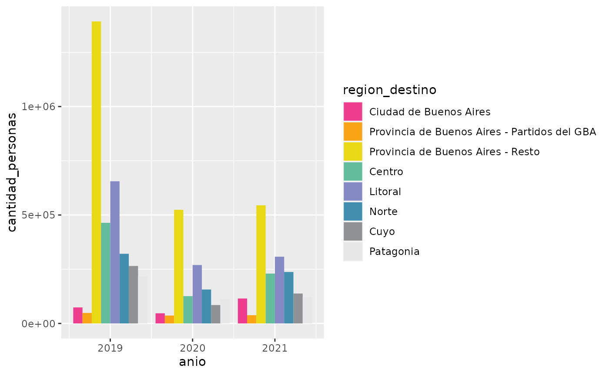

get-started.Rmd
dnmye_colores()
#> [1] "#EE3D8F" "#F7941E" "#FFD100" "#D7DF23" "#50B8B1" "#9283BE" "#37BBED"
#> [8] "#50535C" "#AAAAAA" "#E7E7E7"
dnmye_colores("rojo")
#> [1] "#EE3D8F"
dnmye_colores(1)
#> [1] "#EE3D8F"
dnmye_paletas("c2_continuo")(3)
#> [1] "#50B8B1" "#719DB7" "#9283BE"
dnmye_paletas("c10_todos")(20)
#> [1] "#EE3D8F" "#F26659" "#F68F23" "#FAAD11" "#FECA03" "#F0D60C" "#DDDC1D"
#> [8] "#ACD24F" "#6CC093" "#61AAB4" "#8090BA" "#7E8EC7" "#53A9DE" "#3AAAD6"
#> [15] "#467991" "#595C64" "#848589" "#ADADAD" "#CACACA" "#E7E7E7"
datafile <- system.file("toy_evyth.rds", package = "comunicacion")
toy_evyth <- readRDS(datafile)
toy_evyth %>%
dplyr::mutate(periodo = as.factor(paste0(anio, trimestre)),
region_destino = factor(region_destino,
labels = c("Ciudad de Buenos Aires",
"Provincia de Buenos Aires - Partidos del GBA",
"Provincia de Buenos Aires - Resto", "Centro",
"Litoral",
"Norte", "Cuyo", "Patagonia"))) %>%
dplyr::group_by(periodo, region_destino) %>%
dplyr::summarise(cantidad_personas = sum(pondera)) %>%
ggplot2::ggplot(ggplot2::aes(x = periodo,
y = cantidad_personas,
color = region_destino,
group = region_destino)) +
ggplot2::geom_line() +
scale_color_dnmye()
#> `summarise()` has grouped output by 'periodo'. You can override using the
#> `.groups` argument.
datafile <- system.file("toy_evyth.rds", package = "comunicacion")
toy_evyth <- readRDS(datafile)
toy_evyth %>%
dplyr::mutate(region_destino = factor(region_destino,
labels = c("Ciudad de Buenos Aires",
"Provincia de Buenos Aires - Partidos del GBA",
"Provincia de Buenos Aires - Resto", "Centro",
"Litoral",
"Norte", "Cuyo", "Patagonia"))) %>%
dplyr::group_by(anio, region_destino) %>%
dplyr::summarise(cantidad_personas = sum(pondera)) %>%
ggplot2::ggplot(ggplot2::aes(x = anio,
y = cantidad_personas,
fill = region_destino)) +
ggplot2::geom_col(position = ggplot2::position_dodge()) +
scale_fill_dnmye()
#> `summarise()` has grouped output by 'anio'. You can override using the
#> `.groups` argument.